Fédérer les acteurs du Kundalini Yoga
Rassembler les enseignant·es et les pratiquant·es passionné·es de cette discipline en France.
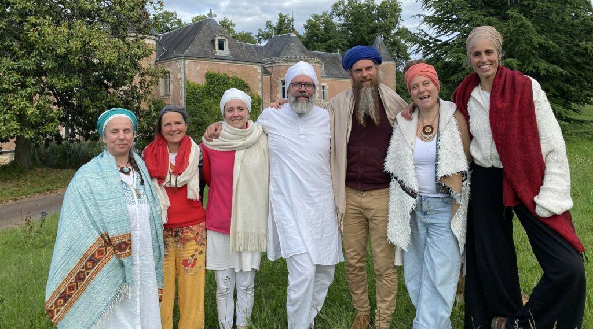
Une association loi 1901, espace vibrant de rencontres, d’échanges et de communication au service des enseignant·es, des pratiquant·es et des passionné·es du Kundalini Yoga en France.
Trois objectifs guident l’action de la Fédération.
Rassembler les enseignant·es et les pratiquant·es passionné·es de cette discipline en France.
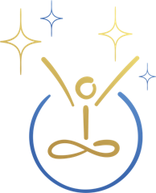
Mettre en lumière cette forme de yoga pour permettre au plus grand nombre de l’enseigner et de le pratiquer.
Être la voix du Kundalini Yoga auprès des pouvoirs publics, des médias et des autres fédérations de yoga.
« S’aventurer ensemble au cœur de l’écoute et de l’expérience pour servir et rayonner. »
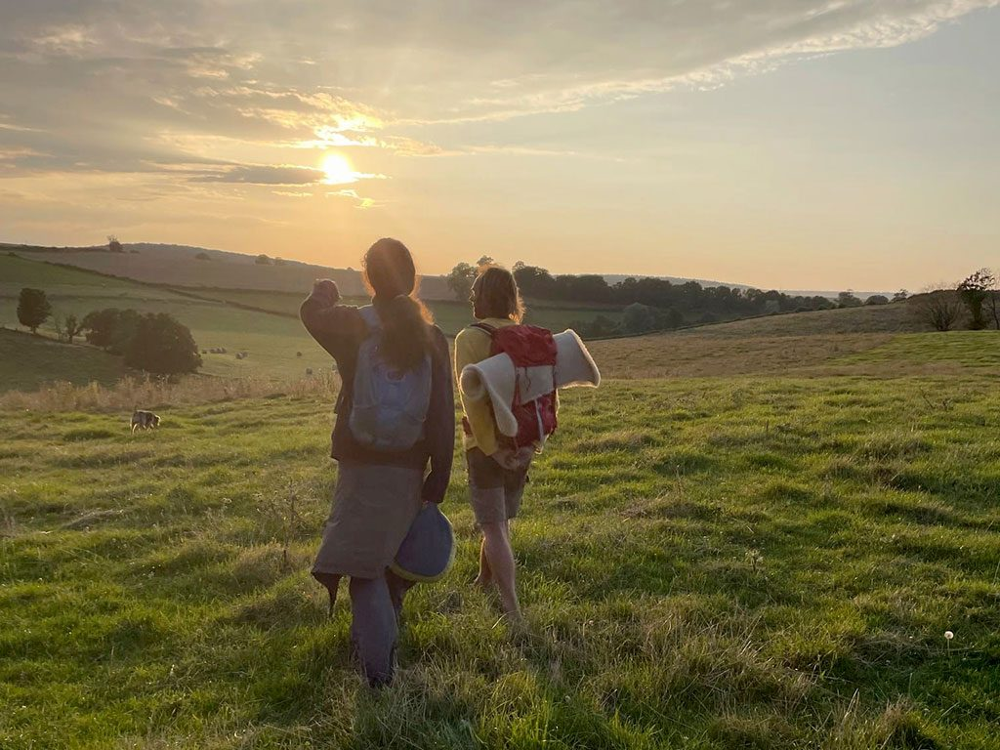
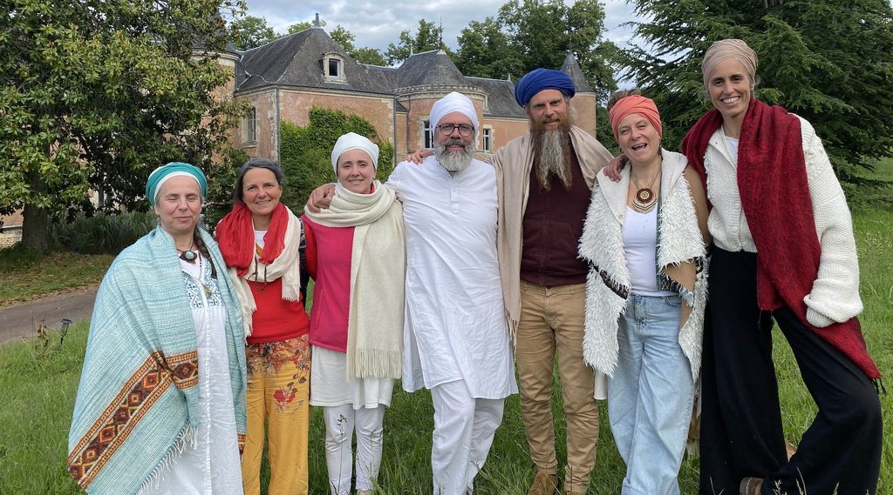
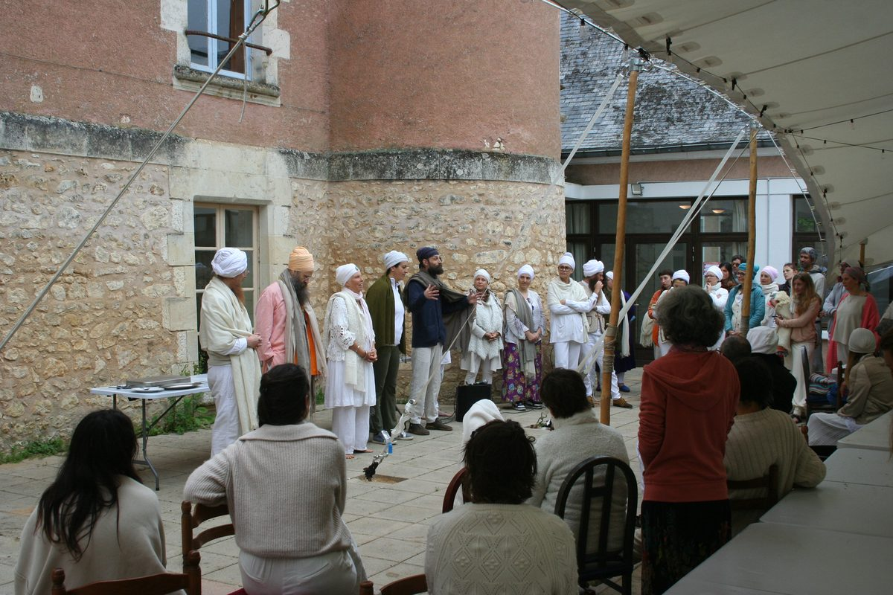
Une mine d’informations sur le Kundalini Yoga en France, des annonces de cours aux fiches pratiques.
Pour les enseignant·es et formateur·ices : un espace dédié pour gérer leur communication, leurs événements et leur adhésion.
Une assurance responsabilité civile et dommages corporels pour les enseignant·es et les pratiquant·es.
Pour les traductions en français des principaux ouvrages sur le Kundalini Yoga et ses techniques associées.
Des rencontres nationales, dont le festival annuel, le Printemps du Yoga.
Chaque dimanche matin, un cours en ligne pour pratiquer ensemble. En savoir plus
À l’échelle mondiale, le Kundalini Yoga s’appuie sur des institutions clés : 3HO, IKYTA et KRI. Elles assurent un fonctionnement harmonieux entre les fédérations nationales et veillent aux standards de qualité et d’éthique.
Healthy, Happy, Holy
Fondée en 1969, la Fondation 3HO a pour mission de propager le Kundalini Yoga à travers le monde. Elle est reconnue par les Nations unies comme organisation non gouvernementale (ONG) au Conseil économique et social.
3ho.org (en anglais)International Kundalini Yoga Teachers Association
L’association mondiale des enseignant·es de Kundalini Yoga, fondée officiellement en 1994. La FFKY la représente en France.
ikyta.org (en anglais)Kundalini Research Institute
Créé le 1er février 1976, KRI collecte et diffuse les enseignements du Kundalini Yoga en préservant leur pureté, leur intégrité et leur précision. Garant de la qualité, KRI supervise la formation des professeur·es dans le monde.
kundaliniresearchinstitute.orgNous sommes là pour donner une voix à chacun·e, au plus près de vos préoccupations, en favorisant l’inclusivité, le partage et des réponses concrètes à vos besoins.
composition et présentations à confirmer par le bureau
Co-présidente
présentation à confirmer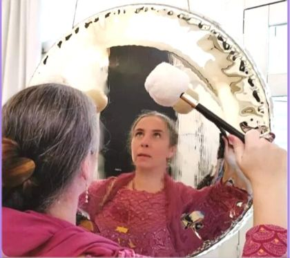
Co-présidente
présentation à confirmerTrésorière
présentation à confirmer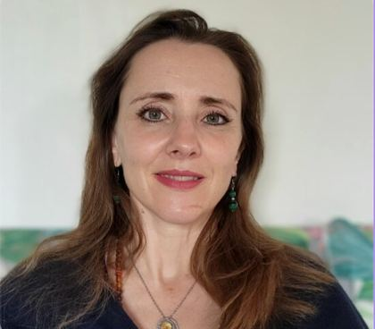
Secrétaire
présentation à confirmer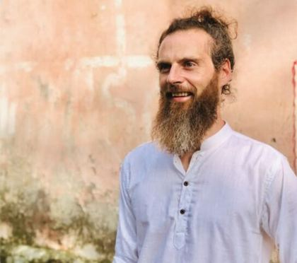
Secrétaire
présentation à confirmer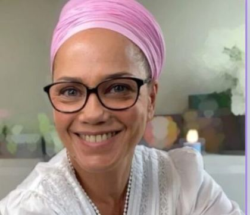
Secrétaire
présentation à confirmer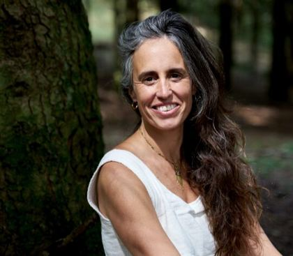
Secrétaire
présentation à confirmer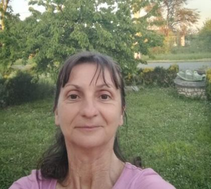
Secrétaire
présentation à confirmer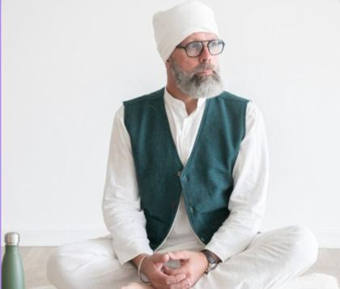
Secrétaire
présentation à confirmerLa transparence de la vie associative, en trois documents.
Version de juillet 2015 en ligne. version en vigueur à confirmer
Télécharger les statuts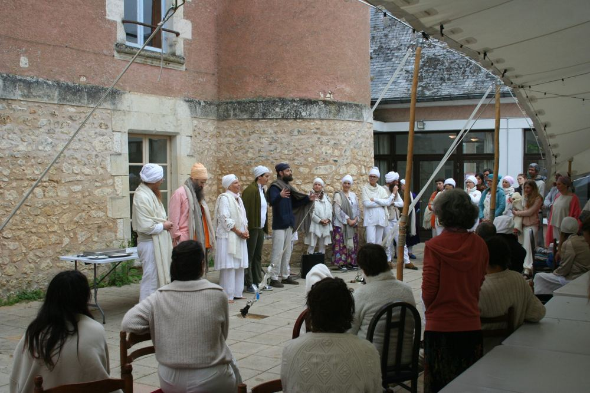


La transparence et le respect des normes éthiques créent un environnement propice à la croissance spirituelle. Le code d’éthique le plus récent et les 10 droits de l’élève sont accessibles à toutes et à tous.
Le bureau des plaintes de la Commission de l’éthique et des normes professionnelles (EPS), composé d’expert·es et d’enseignant·es internationaux, examine les recours liés aux enseignant·es certifié·es KRI, aux formateur·ices KRI, aux élèves de la formation d’enseignant·e de niveau 1 KRI et aux ministres du Sikh Dharma International (SDI). Toutes les procédures existent en français, avec la possibilité d’un dépôt anonyme.
La FFKY vous oriente et répond à vos questions sur la procédure : contact@ffky.fr. Pour un préjudice relevant du civil ou du pénal, les autorités judiciaires compétentes sont votre recours.
Article de KRI en français : « Comprendre le déséquilibre des pouvoirs dans la relation élève-enseignant : guide de l’étudiant en yoga ».
Lire l’articleLe yoga représente l’unité et l’unicité. Grâce au Kundalini Yoga, nous prenons conscience de notre rôle dans le monde et de la valeur de chacun·e.
KRI et la FFKY s’engagent à incarner et à cultiver une communauté inclusive et accueillante pour une diversité de voix, de styles de vie et de pratiques, fondée sur le respect mutuel et l’accessibilité, afin :
Nous vous invitons à la vigilance et à l’écoute, pour que notre pratique soit un modèle d’inclusion dans la diversité.
Ressources pour les enseignant·es et formateur·ices : à venir.
Traduire, tenir un stand, enseigner au festival, proposer vos initiatives : la FFKY catalyse votre énergie.